This is a Digital Exhibit showcasing
propaganda from the first Great War
A Monthly Magazine Devoted to the Interests of the Working People
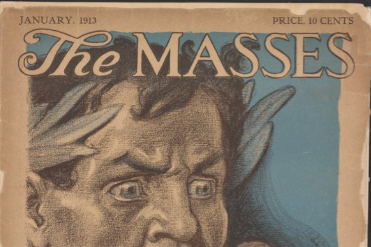
A young American has her ship torpedoed by a German U-boat but makes it back to ancestral home in France, where she witnesses German brutality firsthand.
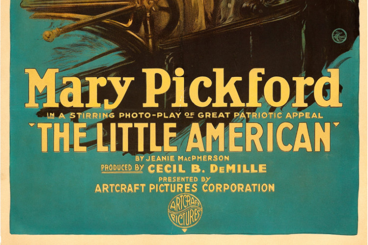
German propaganda newspaper was distributed by air in 1918 to the American troops on the ground.
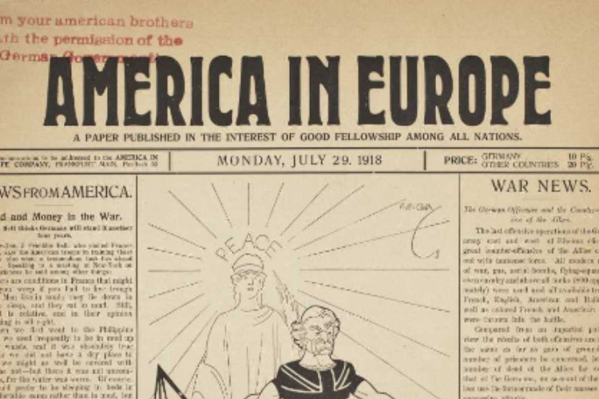
World War, USA Military, Propaganda Poster
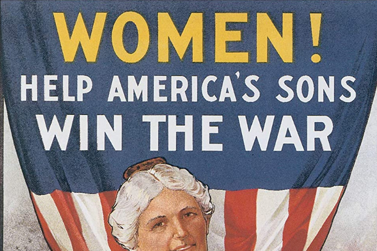
German Propaganda Poster
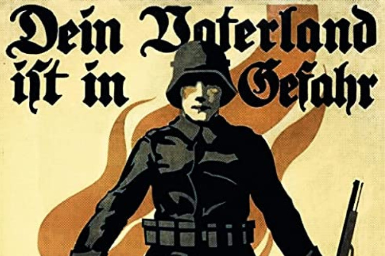
It was first produced in 1914, but has taken on a more iconic status since the war, when it was not widely circulated outside of the London area.
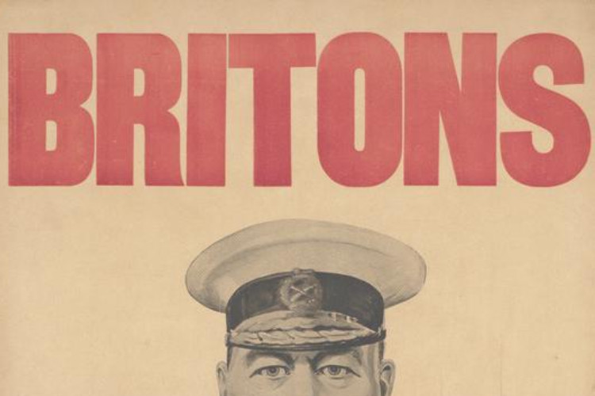
Frances Adams Halsted (designer) and Vincente Aderente (painter) Create Columbia Calls. Convinced that war with Germany was inevitable, Frances Adams Halsted wrote her poem, Columbia Calls, in 1916. After America entered the war on April 6, 1917, Halsted donated both her poem and accompanying image design to the U.S. War Department.
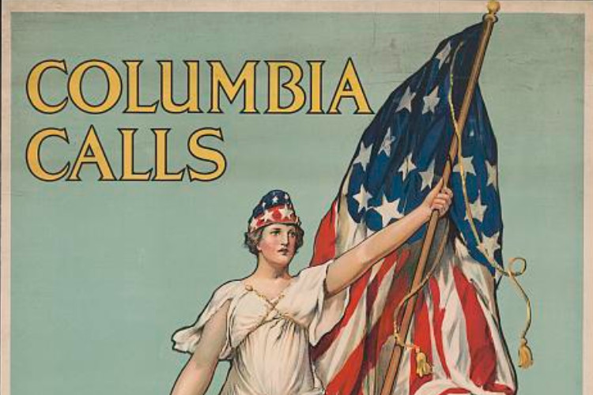
Poster showing a monumental female figure with a tray of food, poor women and children at her feet, with the skyline of New York City in the background.
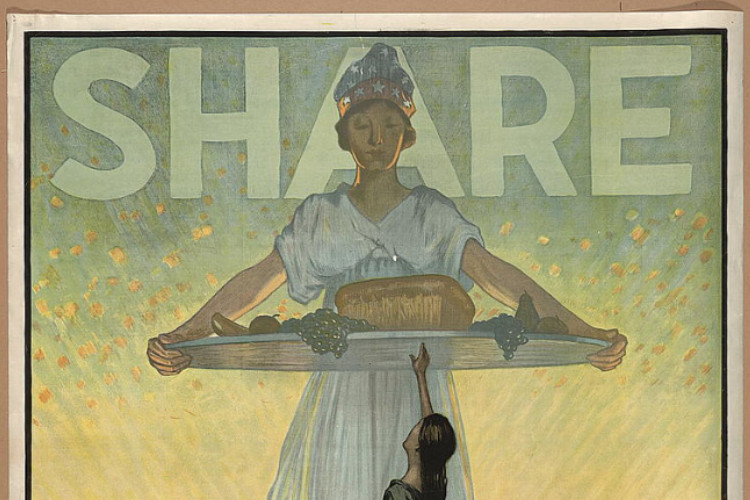
Facing the future Uncle Sam offers training to every man disabled in the service. Poster showing a disabled man with a crutch standing in a doorway looking at landscape beyond, with Red Cross nurse and others in foreground.
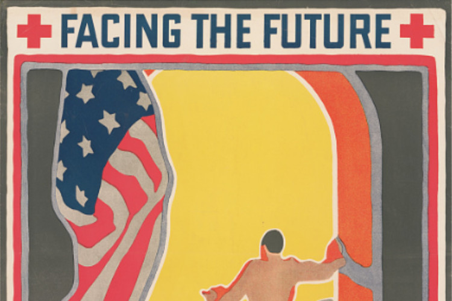
Poster showing a young woman tending a garden, with a drawing of a soldier in the background. N.Y. : The American Lithographic Co., c1918.
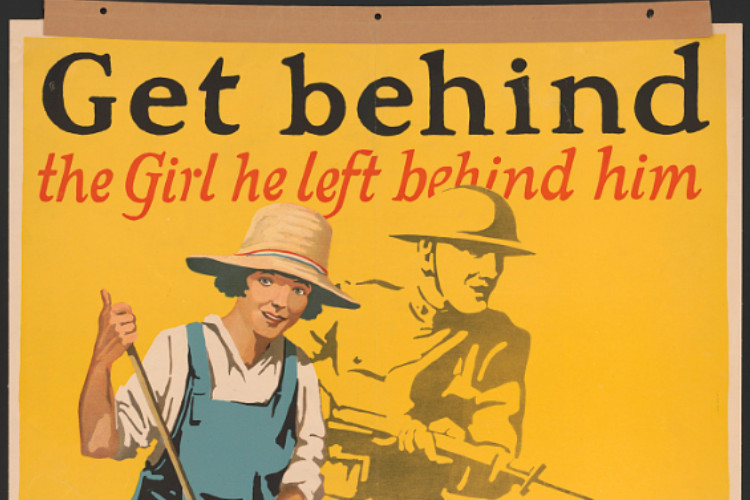
Food will win the war - You came here seeking freedom, now you must help to preserve it - Wheat is needed for the allies - waste nothing. Poster showing immigrants arriving in New York harbor, with Statue of Liberty beneath a rainbow.
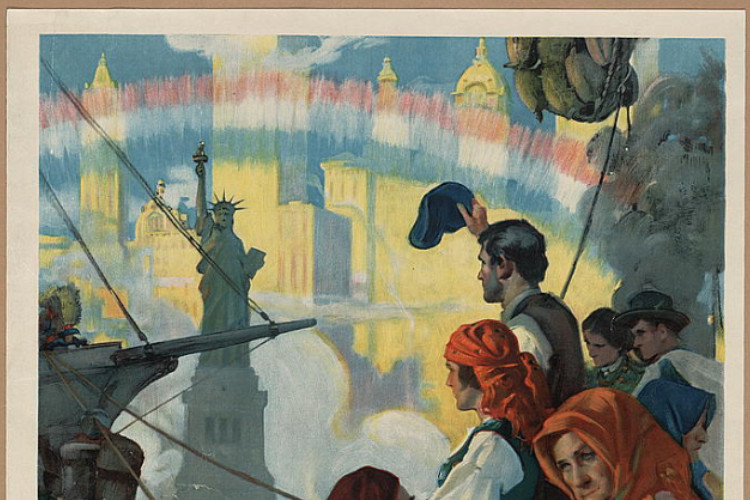
After two and a half years of neutrality, the United States entered World War I on April 6, 1917. James Montgomery Flagg, who created some of the war's most indelible images, sounded the alarm for all citizens in this poster which was featured in "Wake Up, America" Day in New York City just thirteen days later on April 19th.
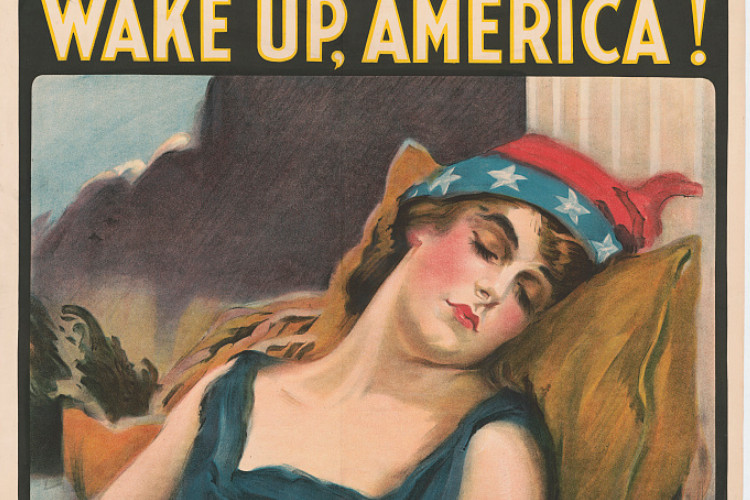
Created by Ashton Smith.
{kind=link}
{kind=link}
{kind=link}
{kind=link}
{kind=link}
{kind=link}
{kind=link}
{kind=link}
{kind=link}
{kind=link}
{kind=link}
{kind=link}